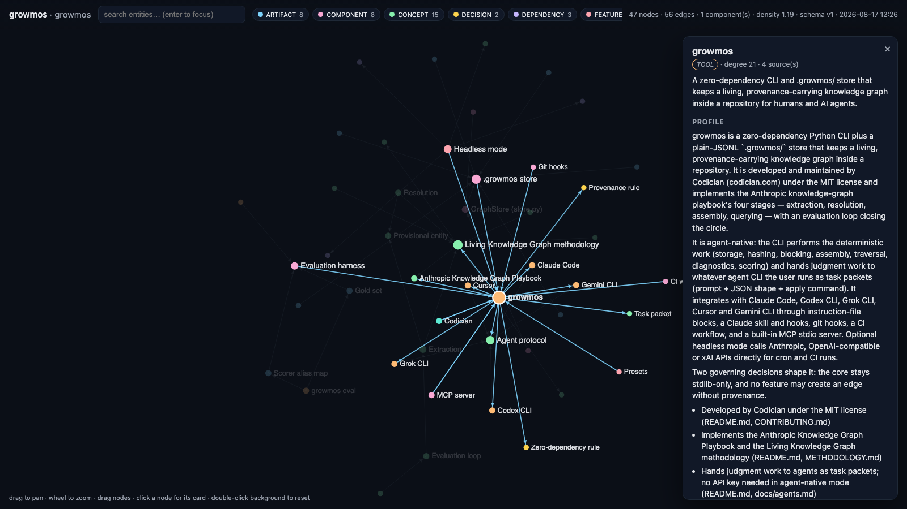

growmos
A living knowledge graph that grows with your repo — shared, provenance-carrying memory for humans and AI agents. Agent-native. Zero dependencies. MIT.
pip install growmos cd your-repo && growmos init # detects Claude Code / Codex / Cursor / Gemini and wires them growmos view # open the interactive explorer
Live demo → growmos's own graph
The repository dogfoods itself: 47 nodes, 56 edges, hub profiles, edge provenance. Click any node.
Live demo → the Apollo corpus
The Anthropic playbook's six-document example: "Edwin Aldrin" → "Buzz Aldrin", one connected component, density 1.58.
GitHub
Source, docs, methodology, issues. MIT.
PyPI
pip install growmos · Python ≥ 3.9 · no dependencies.

How it works
Docs, ADRs, READMEs and sessions are extracted into typed entities and short-verb-phrase relations, resolved into canonical nodes ("Edwin Aldrin" → "Buzz Aldrin"), assembled with provenance and corroboration counts, and queried as k-hop subgraphs the agent must cite. The CLI does the deterministic work; the judgment work is handed to whatever agent you already run — Claude Code, Codex, Grok, Cursor, Gemini — as task packets. No API key needed. An evaluation loop (gold sets, F1, a 10-item readiness checklist) keeps it honest, automatically.
Read the methodology: METHODOLOGY.md.